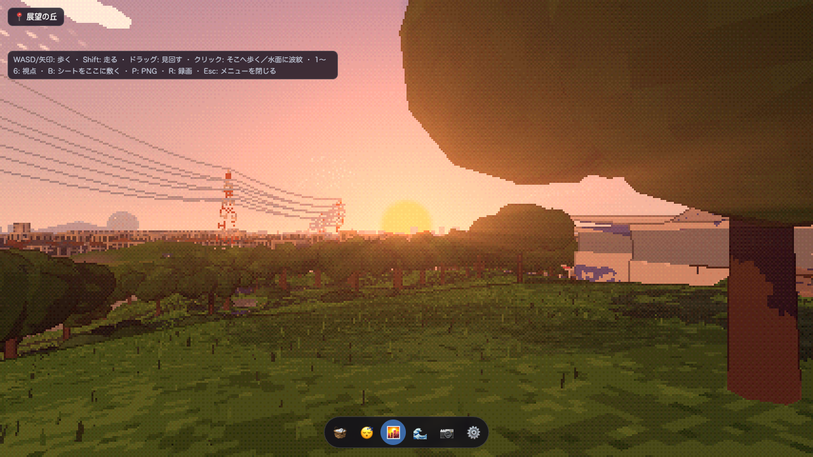
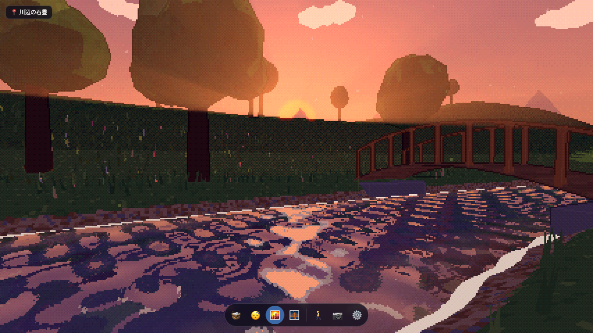
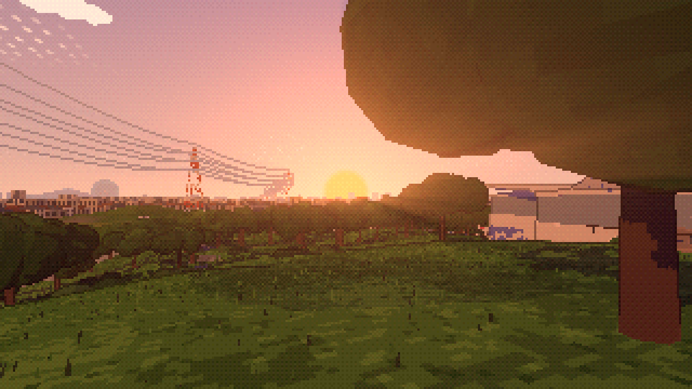
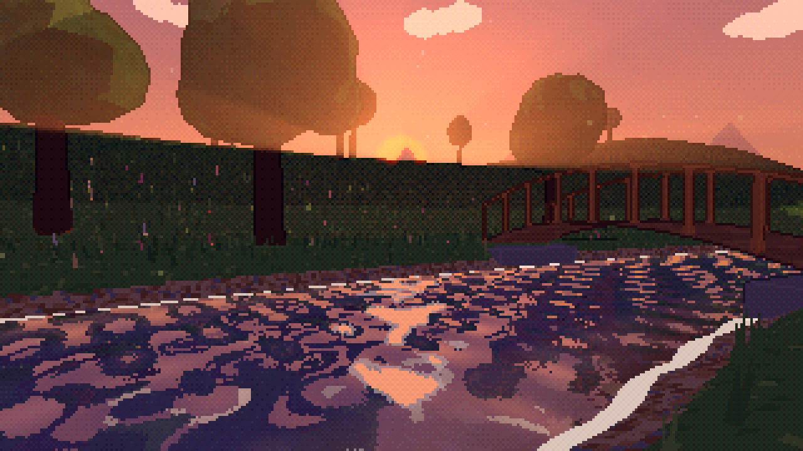
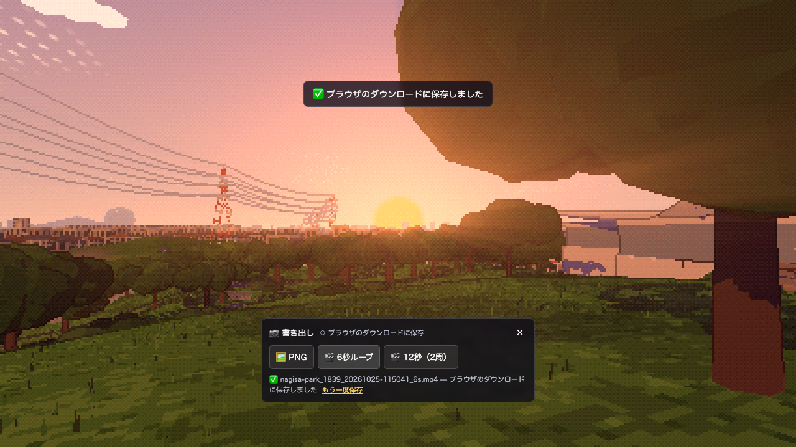
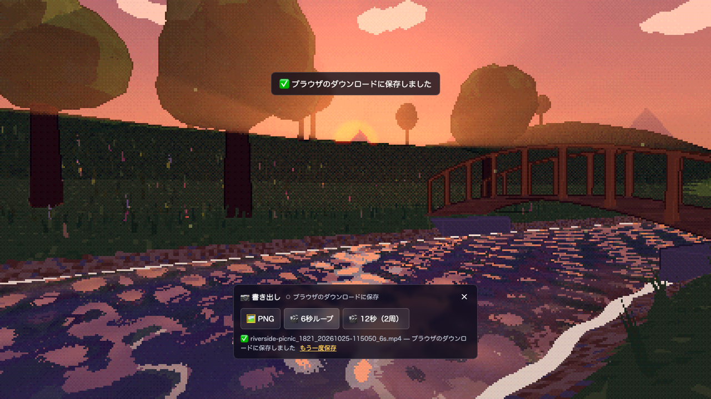

2026-10-25。コミット4704cefを公開後、Chromeで実際の書き出しボタンを操作し、PNGと6秒動画のダウンロードを確認しました。ローカルの代替アセットは使用していません。
詳細設計・検証結果 ／ ブラウザ操作・配信一致・保存結果 ／ Pagesビルド ／ 配信13ファイルの照合






MediaRecorderの実時間録画のため、指定秒数との差や端点フレームの完全一致は詳細設計の制限事項を参照してください。